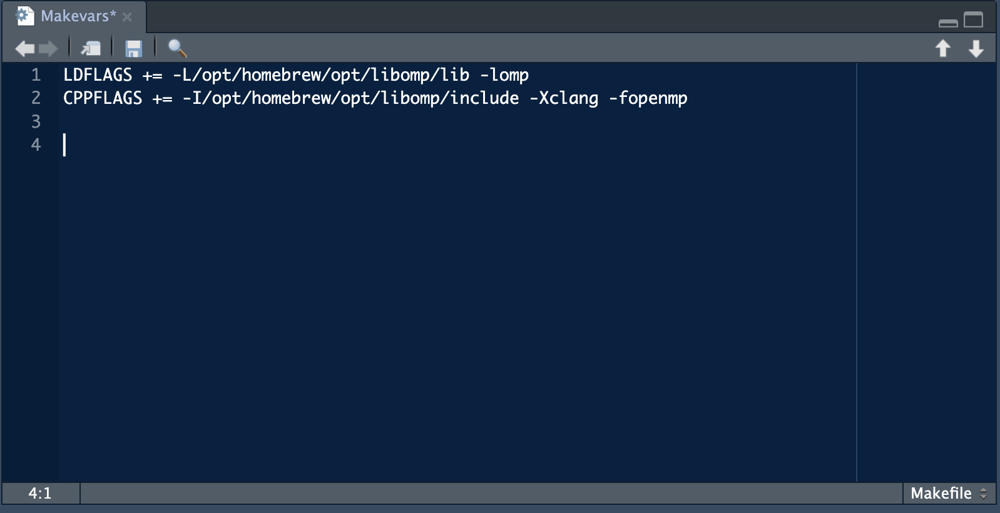
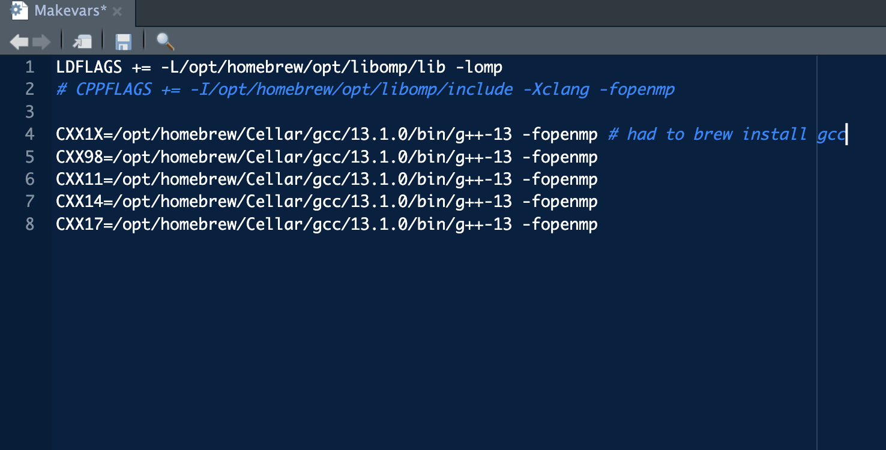

xcode-select --installThis blog post is an example of two things:
- You don’t know what you don’t know, and
- Using a Mac does sometimes make things harder1
I am used to just installing packages in R and having them just work. I honestly did not even pay much attention to the warning I would get when loading fst: “OpenMP was not detected, using single threaded mode.” It wasn’t until someone pointed out that I was only using a single thread that I noticed something was wrong–or performance could’ve been improved if I had paid a bit more attention.
I am not an expert on why the default mac version of the C-compiler does not support OpenMP. I did however get it to work on my M1 mac so I figured I would document the steps here and share. I am also writing this to my future self to help me through setting this up on future computers.
Setting Up OpenMP multi threads for data.table and fst()
- In terminal, install xcode (if not already installed)
- In terminal, install homebrew (if not already installed)
brew
brew install pkg-config- In terminal, using homebrew install openMP library and other dependencies
brew install llvm libomp gcc- In terminal, create a directory called
.Rand within this directory, create a file calledMakevars
mkdir ~/.R
touch ~/.R/Makevars- Edit the Makevars file. Can do this in RStudio by navigating to in the Files pane: Home > .R > Makevars. Open and edit the file as you would an .Reviron file. Type the following in the file and save.
LDFLAGS += -L/opt/homebrew/opt/libomp/lib -lomp
CPPFLAGS += -I/opt/homebrew/opt/libomp/include -Xclang -fopenmp
- Back in the terminal, load R and install
data.tablefrom source and then quit.
# In terminal
R
install.packages("data.table", type = "source")
quit() # quit R- Check to make sure
data.tableis using multiple threads in RStudio by restarting R and loadingdata.table
library(data.table)
getDTthreads() # check # of threads- Go to
~/.R/Makefileand comment out CPPFLAGS line and add additional lines so that makefile looks like this:
LDFLAGS += -L/opt/homebrew/opt/libomp/lib -lomp
# CPPFLAGS += -I/opt/homebrew/opt/libomp/include -Xclang -fopenmp
CXX1X=/opt/homebrew/Cellar/gcc/13.1.0/bin/g++-13 -fopenmp # had to brew install gcc
CXX98=/opt/homebrew/Cellar/gcc/13.1.0/bin/g++-13 -fopenmp
CXX11=/opt/homebrew/Cellar/gcc/13.1.0/bin/g++-13 -fopenmp
CXX14=/opt/homebrew/Cellar/gcc/13.1.0/bin/g++-13 -fopenmp
CXX17=/opt/homebrew/Cellar/gcc/13.1.0/bin/g++-13 -fopenmp
- If step 8 doesn’t work, check to make sure the paths are correct for lines 4-8. To do this, you can go in terminal and make sure that the path exists using code below. The output should show 13.1.0.
cd /opt/homebrew/Cellar/gcc
ls- In the terminal, install fst and fstcore from source:
R
install.packages("fstcore", type = "source")
install.packages("fst", type = "source")
quit()- Go back to RStudio and restart R. Load fst and check threads:
library(fst)
threads_fst()[1] 8Footnotes
and yet, I will continue to stan and it will always be my preferred OS so plz don’t try and change my mind.↩︎